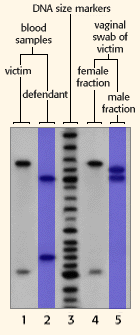

DNA Forensics Problem Set 1
Problem 4: Rape investigation
The key portion of the autoradiograph from a single locus probe analysis of various DNA samples in a rape investigation is shown in this figure. If you are the DNA analyst, you should conclude that:
Tutorial
|
DNA profile analysis
DNA evidence is most powerful when used to demonstrate that an individual is not the source of biological evidence in a criminal investigation. In the case of a rape, if the male fraction of the DNA evidence contains alleles that are not shared with the suspect, then the suspect could not have deposited that sperm. The suspect would be excluded as a possible source of the DNA found during the sexual assault exam. Notice that in this set of evidence, the victim's DNA profile serves as an internal control. The victim's known blood sample (lane 1) should, and does, match the female fraction of the DNA from the sex assault exam (lane 4). In contrast, the defendant's known blood sample (in lane 2) does not match the male fraction of the evidentiary DNA (in lane 5). All it takes to exclude a defendant is a single band in the evidentiary lane that is not found in the defendant's lane. In this case, the defendant does not have the top band in lane 5, thus he could not have been the source of the DNA in lane 5. |
 |


The Biology Project
University of Arizona
Tuesday, August 20, 1996
Contact the Development Team
http://www.biology.arizona.edu
All contents copyright © 1996. All rights reserved.